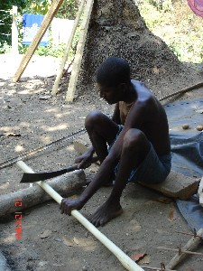
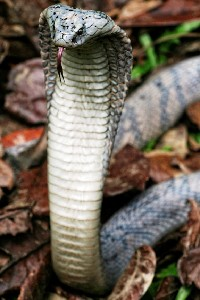

U - u
u- ऊ- CLT क्लिटिक. clitic, third singular subject (exclusive); तृतीय एकवचन कर्तावाचक क्लिटिक (अनन्य). u cɑy-bi tɑ-biŋo ऊ चाय्बी ताबीङो. What was he thinking of/ remembering? वह क्या सोच/याद कर रहा था? SD: grammar, व्याकरण.
uɑɡe ऊआगे Etym: Little Andaman (Onge); ओंगे. N सं. a type of shell; एक प्रकार की सीपी. SD: marine, समुद्री.
ubɑːlɔ ऊबाऽलौ N सं. aeroplane; हवाईजहाज़. SD: vehicle, वाहन.
ubɑlu ऊबालू MORPH: u-bɑlu. N सं. community which eats human flesh; समुदाय जो आदम-मांस खाता है. SD: people, लोग. NT: A mythical figure, Ubalu, who is supposed to catch a person and make him sit on his flying carpet before eating him up. एक मिथक कथा के अनुसार ऊबालू मनुष्य को उड़न-कालीन पर बिठाकर खा जाता है।.
ubulumi ऊबूलूमी N सं. pimple; फुंसी. SD: illness, रोग.
uccire ऊच्चीरे ADJ वि. clean; साफ़; स्वच्छ. SD: attribute, विशेषता.
ufu ऊफू N सं. utensils, for cooking; खाना पकानेवाले बरतन. SD: cooking & food, खाना-पीना.
uiboʈʰo ऊईबोठो MORPH: u-i-boʈʰ-o. V क्रि. shoot a bullet or an arrow; गोली या तीर आदि चलाना.
uilem ऊईलेम V क्रि. urinate; पेशाब करना.
uiterbolɔm ऊईतेरबोलौम MORPH: u-i-ter-bol-ɔm. V क्रि. finish; समाप्त करना.
uiʈobo1 ऊईटोबो V क्रि. steal; चोरी करना. SEE: uiʈobo2 ‘theft’ ‘चोरी ऊईटोबोhm:{2}’.
uiʈobo2 ऊईटोबो N सं. theft; चोरी. SD: activity & event, कार्यकलाप. SEE: uiʈobo1 ‘steal’ ‘चोरी करना ऊईटोबोhm:{1}’.
ujjɑo ऊज्जाओ N सं. side or the outer surface of the boat; डोंगी के बगलवाली बाहरी सतह. SD: boat related, नाव सम्बंधी.
ujjekɑo ऊज्जेकाओ MORPH: ut-je-k-ɑo. V क्रि. bring back; वापस लाओ. nɑo mɑlɑr o-to tɑjiocor tʰuto-il u-jjekɑo नाओ मालार ओतो ताजीओचोर थूतोईल ऊज्जीकाओ. Having caught the fish Nao brought it home. नाओ मछली पकड़कर घर लाया।.
ujjete ऊज्जेते MORPH: ujj-ete. ADJ वि. shy; शर्मीला. ujjete-tɛr-cɛk ऊज्जेते तैर चैक. very shy person. बहुत शर्मीला व्यक्ति. SD: attribute, विशेषता.
ujuro ऊजूरो MORPH: u-juro. V क्रि. shiver; कांपना. u-juro-lɔm ऊजूरोलौम. He shivers or his body shivers. वह कांपता है या उसका शरीर कांपता है।.
ukʰi ऊखी PARTICLE नि. nominal particle which follows verb; as in Hindi ‘Relative Marker’; वाला. kʰole ukʰi खोले ऊखी. laughing person. हंसने वाला. SD: particle, निपात.
ukʰirme ऊखीरमे Etym: Khora; खोरा. N सं. summer; गर्मियां; ग्रीष्म ऋतु. SD: season, मौसम.
 |
ukkubeliŋ ऊक्कूबेलीङ MORPH: ukku-beliŋ. V क्रि. cut the wood; लकड़ी काटना.
ukkuburuk1 ऊक्कूबूरूक MORPH: ukku-buruk. V क्रि. go straight; सीधे जाओ. SEE: ukkuburuk2 ‘upside down’ ‘औंधा ऊक्कूबूरूकhm:{2}’.
ukkuburuk2 ऊक्कूबूरूक MORPH: ukku-buruk. ADJ वि. upside down; औंधा. SD: attribute, विशेषता. SEE: ukkuburuk1 ‘go straight’ ‘सीधा जाओ ऊक्कूबूरूकhm:{1}’.
ukobio ऊकोबीओ MORPH: u-kobio. V क्रि. cut, with teeth; chew; दांत से काटना; चबाना.
uku1 ऊकू Etym: Little Andaman (Onge); ओंगे. N सं. bucket; बालटी. SD: household, घरेलू. SEE: uku-2 ‘clitic, third singular subject (exclusive)’ ‘क्लिटिक, तृतीय एकवचन कर्तावाचक (अनन्य) ऊकू-hm:{2}’.
uku-2 ऊकू- CLT क्लिटिक. clitic, third singular subject (exclusive); तृतीय एकवचन कर्तावाचक क्लिटिक (अनन्य). SD: grammar, व्याकरण. SEE: uku1 ‘bucket’ ‘बालटी ऊकूhm:{1}’.
ukukʰue ऊकूखूए MORPH: u-ku-kʰue. V-CAUS प्रे क्रि. make someone drink; पिलाओ.
ukunɑkɑkʰe ऊकूनाकाखे MORPH: ukun-ɑkɑkʰe. N सं. one who lies; झूठा. SD: attribute, विशेषता.
ukuntɛrli ऊकून्तैरली MORPH: ukun-tɛr-li. N सं. toothpick; दांत कुरेदनी. SD: tool, औज़ार.
ukunʈʰule ऊकूनठूले V क्रि. stumble; ठोकर लगना.
ulekɔm ऊलेकौम V क्रि. ejaculate; स्खलित होना.
uliɛm ऊलीऐम V क्रि. whistle; सीटी बजाना. u-ʈʰi-bi-uli-ɛm ऊठीबीऊलीऐम. He is whistling at me. वह मुझे सीटी मार रहा है।.
ullui ऊल्लूई N सं. a very big wave, like a tsunami, which can turn over a ship; सूनामी जैसी बहुत बड़ी लहर जो नाव को भी उलट सकती है. SD: natural environment, प्राकृतिक वातावरण, marine, समुद्री.
ulluːy ऊल्लूऽय N सं. whistle, used while hunting; सीटी. SD: hunting & gathering, शिकार एवं संचय सम्बंधी.
 ulŋɑ ऊल्ङा N सं. wave; लहर. SD: natural environment, प्राकृतिक वातावरण, marine, समुद्री.
ulŋɑ ऊल्ङा N सं. wave; लहर. SD: natural environment, प्राकृतिक वातावरण, marine, समुद्री.
ulue1 ऊलूए Etym: Khora; खोरा. V क्रि. erupt (mud volcano); ज्वालामुखी का फूटना. SEE: ulue2 ‘water spring; fountain’ ‘पानी का झरना; फव्वारा ऊलूएhm:{2}’.
ulue2 ऊलूए VAR: ullue ऊल्लूए; uluweː ऊलूवेऽ. N सं. water spring; fountain; पानी का झरना; फव्वारा. SD: natural environment, प्राकृतिक वातावरण. SEE: ulue1 ‘eruption, of mud volcano’ ‘फूटना, ज्वालामुखी का ऊलूएhm:{1}’.
uluku ऊलूकू N सं. poison; विष. SD: natural environment, प्राकृतिक वातावरण.
 |
 ulukʰu ऊलूखू VAR: uluxu ऊलूखू. N सं. snake (king cobra); नाग, फन वाला सांप. SD: reptile, रेंगने वाले जंतु.
ulukʰu ऊलूखू VAR: uluxu ऊलूखू. N सं. snake (king cobra); नाग, फन वाला सांप. SD: reptile, रेंगने वाले जंतु.
umikʰu ऊमीखू MORPH: u-mikʰu. N सं. lap; गोद. ʈʰu-mikʰu ठूमीखू. my lap. मेरी गोद. SD: body part term, शारीरिक अंग शब्दावली.
umili ऊमीली VAR: uɲili ऊञीली. N सं. onset of pain due to snake-bite; सांप के काटने के बाद दर्द का प्रारंभ. SD: illness, रोग.
umoːkke ऊमोऽक्के V क्रि. offer; आग्रह या प्रस्ताव करना.
umoʈʰo ऊमोठो MORPH: u-moʈʰo. N सं. fist; मुट्ठी. ʈʰu-moʈʰo ठूमोठो. my fist. मेरी मुट्ठी. SD: body part term, शारीरिक अंग शब्दावली.
 umɔʈo ऊमौटो MORPH: u-mɔʈo. N सं. feet; पांव.
umɔʈo ऊमौटो MORPH: u-mɔʈo. N सं. feet; पांव.  ʈʰu-mɔʈo ठूमौटो. my feet. मेरे पांव. rɛyɑ mɔʈɔtɑ ʈoɖe tɛbɔlo रैया मौटौता टोडे तैबौलो. The rat ran away touching the Reya’s foot. चूहा रेया के पैर को छूता हुआ भाग गया।. SD: body part term, शारीरिक अंग शब्दावली.
ʈʰu-mɔʈo ठूमौटो. my feet. मेरे पांव. rɛyɑ mɔʈɔtɑ ʈoɖe tɛbɔlo रैया मौटौता टोडे तैबौलो. The rat ran away touching the Reya’s foot. चूहा रेया के पैर को छूता हुआ भाग गया।. SD: body part term, शारीरिक अंग शब्दावली.
 umɔʈotujukʰu ऊमौटोतूजूखू MORPH: umɔʈot-ujukʰu. N सं. front part of the foot; पांव का पंजा. ʈʰu-mɔʈo-tujukʰu ठूमौटोतूजूखू. front part of my foot. मेरे पांव का पंजा. SD: body part term, शारीरिक अंग शब्दावली.
umɔʈotujukʰu ऊमौटोतूजूखू MORPH: umɔʈot-ujukʰu. N सं. front part of the foot; पांव का पंजा. ʈʰu-mɔʈo-tujukʰu ठूमौटोतूजूखू. front part of my foot. मेरे पांव का पंजा. SD: body part term, शारीरिक अंग शब्दावली.
 umɔʈotuŋkenɑp ऊमौटोतूङकेनाप MORPH: u-mɔʈo-tuŋ-kenɑp. N सं. toes; पांव की उंगलियां.
umɔʈotuŋkenɑp ऊमौटोतूङकेनाप MORPH: u-mɔʈo-tuŋ-kenɑp. N सं. toes; पांव की उंगलियां.  ʈʰumɔʈotuŋkenɑp ठूमौटोतूङकेनाप. my toes. मेरे पांव की उंगलियां. SD: body part term, शारीरिक अंग शब्दावली.
ʈʰumɔʈotuŋkenɑp ठूमौटोतूङकेनाप. my toes. मेरे पांव की उंगलियां. SD: body part term, शारीरिक अंग शब्दावली.
umɔʈɔtɑrɑɖole ऊमौटौताराडोले MORPH: u-mɔʈɔ-tɑrɑ-ɖole. N सं. heel; एड़ी.  ʈʰ-u-mɔʈɔ-tɑrɑ-ɖole ठूमौटौताराडोले. my heel. मेरी एड़ी. SD: body part term, शारीरिक अंग शब्दावली.
ʈʰ-u-mɔʈɔ-tɑrɑ-ɖole ठूमौटौताराडोले. my heel. मेरी एड़ी. SD: body part term, शारीरिक अंग शब्दावली.
 umrɛpʈoy ऊमरैपटोय MORPH: um-rɛpʈoy. ADJ वि. very thin; बहुत पतला/सिकड़ा. SD: attribute, विशेषता.
umrɛpʈoy ऊमरैपटोय MORPH: um-rɛpʈoy. ADJ वि. very thin; बहुत पतला/सिकड़ा. SD: attribute, विशेषता.
uncɛkʰo ऊनचैखो MORPH: un-cɛkʰ-o. V क्रि. be frustrated; be angry with oneself; अपने-आप से गुस्सा होना. ʈʰu-t-un-cɛkʰ-o ठू तून चैखो. I am frustrated or angry (with myself). मैं परेशान या गुस्से में हूं (अपने-आप से)।.
uncɛm ऊन्चैम N सं. wound; घाव. SD: illness, रोग.
unɖue ऊन्डूए V क्रि. break, used for only wooden items; तोड़ना (केवल लकड़ी के चीज़ों के लिए प्रयुक्त).
uno ऊनो VAR: ɑ-ono आओनो. V क्रि. sit down; बैठना.  ɑkɑ uno आका ऊनो. He sits. वह बैठता है।. ŋ-ɑono-be ङाओनो बे. You sit down. तुम बैठ जाओ।. ʈʰ-ɑono ठाओनो. I sat down. मैं बैठा।.
ɑkɑ uno आका ऊनो. He sits. वह बैठता है।. ŋ-ɑono-be ङाओनो बे. You sit down. तुम बैठ जाओ।. ʈʰ-ɑono ठाओनो. I sat down. मैं बैठा।.
 |
unɔpo ऊनौपो N सं. long horned beetle; लम्बे सींग वाला भृंग. Batocesa rufomaculatus. SD: insect & invertebrate, कीट-पतंग एवं अरीढ़ जीव. NT: It makes a sound as if someone is scratching a surface. यह ज़मीन खुरचने जैसी आवाज़ करता है।.
 unrɔnoʈoy ऊन्रौनोटोय MORPH: un-rɔno-ʈoy. N सं. ankle bone; टखने की हड्डी.
unrɔnoʈoy ऊन्रौनोटोय MORPH: un-rɔno-ʈoy. N सं. ankle bone; टखने की हड्डी.  ʈʰ-unrɔnoʈoy ठून्रौनोटोय. my ankle bone. मेरे टखने की हड्डी. SD: body part term, शारीरिक अंग शब्दावली.
ʈʰ-unrɔnoʈoy ठून्रौनोटोय. my ankle bone. मेरे टखने की हड्डी. SD: body part term, शारीरिक अंग शब्दावली.
unšoŋɑk ऊन्शोङाक N सं. spouse; जीवन-साथी; पति या पत्नी. ʈʰun-šoŋɑk ठूनशोङाक. my spouse. मेरा पति या पत्नी. SD: kin term, सम्बंधी वाचक शब्दावली.
untɑ ऊन्ता V क्रि. work; काम करना.
untɑbol ऊन्ताबोल MORPH: untɑbol. ADJ वि. naughty; शरारती. SD: attribute, विशेषता.
untɑɖi ऊन्ताडी V क्रि. pierce ears; कान छेदना.
untɑpʰe ऊनताफे MORPH: un-tɑpʰe. N सं. person, careless; लापरवाह आदमी. SD: people, लोग.
untepuc ऊनतेपूच Etym: Khora; खोरा. VAR: utpuːc उतपूऽच. ADJ वि. alive; जीवित. SD: life, जीवन.
untɛle ऊनतैले VAR: unteːle ऊनतेऽले. V क्रि. call; बुलाना.
untɔloko ऊन्तौलोको V क्रि. break, used for only glass items; तोड़ना (केवल कांच के सामान के लिए प्रयुक्त).
untujurɔlɔm ऊन्तूजूरौलौम MORPH: un-tu-jur-ɔ-l-ɔm. V क्रि. trembling of the hand; हाथ कांपना.
uŋjukʰu ऊङजूखू MORPH: uŋ-jukʰu. N सं. paw; पंजा. cɑo-uŋ-jukʰu चाओ ऊङ जूखू. dog’s paw. कुत्ते का पंजा. SD: body part term, शारीरिक अंग शब्दावली.
 uŋkinɑp ऊङकीनाप MORPH: uŋ-kinɑp. VAR: uŋ-kenɑp ऊङकेनाप. N सं. finger; उंगली.
uŋkinɑp ऊङकीनाप MORPH: uŋ-kinɑp. VAR: uŋ-kenɑp ऊङकेनाप. N सं. finger; उंगली.  ʈʰ-uŋ-kinɑp ठूङकीनाप. my finger. मेरी उंगली. SD: body part term, शारीरिक अंग शब्दावली.
ʈʰ-uŋ-kinɑp ठूङकीनाप. my finger. मेरी उंगली. SD: body part term, शारीरिक अंग शब्दावली.
 uŋkurotɑrɑtɑ ऊङकूरोताराता MORPH: uŋ-kuro-tɑrɑ-tɑ. N सं. palm; हथेली.
uŋkurotɑrɑtɑ ऊङकूरोताराता MORPH: uŋ-kuro-tɑrɑ-tɑ. N सं. palm; हथेली.  ʈʰuŋkurotɑrɑtɑ ठूङकूरोताराता. my palm. मेरी हथेली. SD: body part term, शारीरिक अंग शब्दावली.
ʈʰuŋkurotɑrɑtɑ ठूङकूरोताराता. my palm. मेरी हथेली. SD: body part term, शारीरिक अंग शब्दावली.
uŋtɑɲɑtɛc ऊङताञातैच MORPH: uŋtɑɲɑ-tɛc. N सं. chewing leaf; चबाने वाला पत्ता. SD: flora, फूल-पत्ती.
uŋtɑpʰoŋ ऊङताफोङ MORPH: uŋ-tɑ-pʰoŋ. VAR: oŋ-ʈɑ-pʰoŋ ओङटाफोङ. N सं. ear hole; ear canal; कान का छिद्र.  ʈʰ-uŋ-tɑpʰoŋ ठूङताफोङ. my ear canal. मेरे कान के छिद्र. SD: body part term, शारीरिक अंग शब्दावली.
ʈʰ-uŋ-tɑpʰoŋ ठूङताफोङ. my ear canal. मेरे कान के छिद्र. SD: body part term, शारीरिक अंग शब्दावली.
 uŋto ऊङतो MORPH: uŋ-to. VAR: oŋ-to ओङतो. N सं. lower half of the arm; हाथ का निचला आधा हिस्सा.
uŋto ऊङतो MORPH: uŋ-to. VAR: oŋ-to ओङतो. N सं. lower half of the arm; हाथ का निचला आधा हिस्सा.  ʈʰ-uŋ-tɔ ठूङतौ. lower half of my arm. मेरे हाथ का निचला आधा हिस्सा. SD: body part term, शारीरिक अंग शब्दावली.
ʈʰ-uŋ-tɔ ठूङतौ. lower half of my arm. मेरे हाथ का निचला आधा हिस्सा. SD: body part term, शारीरिक अंग शब्दावली.
upʰu ऊफू N सं. a kind of vessel made up of leaves; एक प्रकार का बर्तन जो पत्तों से बनाया जाता है, दोना. SD: household, घरेलू.
ure ऊरे N सं. power; ताकत. ʈʰɛ ure be ठै ऊरे बे. I am powerful. मैं ताकतवर हूं।. SD: attribute, विशेषता.
 uro ऊरो Etym: Bo. VAR: uɽo ऊड़ो. Etym: Khora. N सं. rope of a harpoon arrow; हारपून भाले की रस्सी. SD: hunting & gathering, शिकार एवं संचय सम्बंधी. NT: Used for hunting pigs. जंगली सूअर का शिकार करने में प्रयुक्त।. SEE: ɸotɑle ‘arrow’ ‘तीर फोताले ’.
uro ऊरो Etym: Bo. VAR: uɽo ऊड़ो. Etym: Khora. N सं. rope of a harpoon arrow; हारपून भाले की रस्सी. SD: hunting & gathering, शिकार एवं संचय सम्बंधी. NT: Used for hunting pigs. जंगली सूअर का शिकार करने में प्रयुक्त।. SEE: ɸotɑle ‘arrow’ ‘तीर फोताले ’.
uroʈɔe1 ऊरोटौए N सं. thick, wooden body of a big arrow; लकड़ी के बड़े भाले का मोटा ढांचा. SD: hunting & gathering, शिकार एवं संचय सम्बंधी. SEE: uroʈɔe2 ‘old times; ancient times’ ‘पुराना ज़माना; पुराने ज़माने ऊरोटौएhm:{2}’.
urɔʈɔe2 ऊरौटौए MORPH: urɔ-ʈɔe. VAR: uro-ʈɔy-l ऊरोटौयल; uɽoʈɔyil ऊड़ोटौयील. ADV क्रि वि. old times; ancient times; पुराना ज़माना; पुराने ज़माने. urɔʈɔe-tɑ-ɲo-ʈʰik-ɲo ऊरौटौए ता ञो ठीक ञो. (He has been) living in the house for a long time. (वह) बहुत समय से इस घर में रह रहा है।. SD: time, समय. SEE: urɔʈɔe1 ‘thick, wooden body of a big arrow’ ‘मोटा ढांचा, लकड़ी के भाले का ऊरौटौएhm:{1}’.
usolo ऊसोलो MORPH: u-solo. V क्रि. shift; relocate; बदलना; फिर स्थापित करना. solo-kɔ सोलोकौ. shift (pst). बदला (भूतकाल).
ut- ऊत- CLT क्लिटिक. clitic, third singular object (exclusive); तृतीय एकवचन कर्मवाचक क्लिटिक (अनन्य). ʈʰu cɑybit ut-kɑɲ-pʰo-b-e ठू चायबीत ऊत्काञफोबे. I will not touch (anything). मैं नहीं छूऊंगी (कुछ भी)।. SD: grammar, व्याकरण.
utɑ ऊता Etym: Bea; बेया. N सं. a type of shell; एक प्रकार की सीपी. SD: marine, समुद्री.
utbelo ऊत्बेलो MORPH: ut-belo. VAR: tut-belo तूत्बेलो. ADJ वि. wide; चौड़ा.  ɲɔrto tutbilo ञौरतो तूतबीलो. wide road. चौड़ी सड़क. SD: attribute, विशेषता.
ɲɔrto tutbilo ञौरतो तूतबीलो. wide road. चौड़ी सड़क. SD: attribute, विशेषता.
utbeːlɔ ऊत्बेऽलौ MORPH: ut-beːlɔ. N सं. wooden plank; लकड़ी का बना प्लेटफ़ार्म. SD: hunting & gathering, शिकार एवं संचय सम्बंधी.
utbirɑŋ ऊत्बीरांग MORPH: ut-birɑŋ. Etym: Khora. ADJ वि. red colour; लाल रंग. SD: attribute, विशेषता.
utbo ऊत्बो MORPH: ut-bo. ADJ वि. reverse; उल्टा. SD: attribute, विशेषता.
utbɔtotʈɔy ऊत्बौतोत्टौय MORPH: ut-bɔ-tot-ʈɔy. N सं. backbone; रीढ़ की हड्डी. SD: body part term, शारीरिक अंग शब्दावली.
utbuco ऊत्बूचो MORPH: ut-buco. N सं. body; शरीर. ʈʰut-buco ठूतबूचो. my body. मेरा शरीर. SD: body part term, शारीरिक अंग शब्दावली.
utbuliɑ1 ऊत्बूलीआ MORPH: ut-buliɑ. VAR: utumbuliɑ ऊतूमबूलीआ; ut-buliyɑː ऊतबूलीयाऽ. N सं. fasting; feast (after fasting); रोज़ा; भोज (रोज़ा के बाद). SD: cooking & food, खाना-पीना. SEE: utbuliɑ2 ‘songs’ ‘गाने ऊत्बूलीआhm:{2}’.
 utbuliɑ2 ऊत्बूलीआ MORPH: ut-buliɑ. VAR: utumbuliɑ ऊतूमबूलीआ. N सं. songs sung at death; मृत्यु पर गाए जाने वाले गाने. SD: death, मृत्यु सम्बंधी, ritual, रीति-रिवाज़. NT: These songs are sung when someone is going far away. The singing starts two days before the person’s departure. यदि कोई छोड़कर दूर देश जाने वाला हो तब ये गाने जाने से दो दिन पहले से गाये जाने लगते हैं।. SEE: utbuliɑ1 ‘fasting; feast (after fasting)’ ‘रोज़ा; भोज (रोज़ा के बाद) ऊत्बूलीआhm:{1}’.
utbuliɑ2 ऊत्बूलीआ MORPH: ut-buliɑ. VAR: utumbuliɑ ऊतूमबूलीआ. N सं. songs sung at death; मृत्यु पर गाए जाने वाले गाने. SD: death, मृत्यु सम्बंधी, ritual, रीति-रिवाज़. NT: These songs are sung when someone is going far away. The singing starts two days before the person’s departure. यदि कोई छोड़कर दूर देश जाने वाला हो तब ये गाने जाने से दो दिन पहले से गाये जाने लगते हैं।. SEE: utbuliɑ1 ‘fasting; feast (after fasting)’ ‘रोज़ा; भोज (रोज़ा के बाद) ऊत्बूलीआhm:{1}’.
utcɑo ऊत्चाओ MORPH: ut-cɑo. V क्रि. spread the net; जाल फैलाना.
utcɔye ऊत्चौये MORPH: ut-cɔye. V क्रि. coerce; to rape; ज़ोर-ज़बरदस्ती से पकड़ना; बलात्कार करना.
utcušu ऊत्चूशू MORPH: ut-cušu. V क्रि. kill someone with a gun; बंदूक से मार डालना. ɑ kʰuɽuc lɑo-bi ut-cušu-e आ खूड़ूच लाओबी ऊत्चूशूए. The police shot a person. पुलिस ने किसी को गोली मारी।.
utdu ऊत्दू MORPH: ut-du. Etym: Khora; खोरा. V क्रि. dry, clothes; कपड़े सुखाना. ʈʰo-eʈ-ɑ-ʈʰ-ut-du-ɔm ठोएटाठूतदूऔम. I am drying the clothes. मैं कपड़े सुखा रही हूं।.
utɛtmoke ऊऐत्मोके MORPH: utɛt-moke. V क्रि. drop; गिराना.
utjeʈʰeb ऊत्जेठेब MORPH: ut-jeʈʰe-b. N सं. sky; आकाश. SD: natural environment, प्राकृतिक वातावरण.
utjulutercɔkʰ ऊत्जूलूतेरचौख MORPH: ut-julu-ter-cɔkʰ. N सं. mirror; शीशा. SD: household, घरेलू.
utkʰije ऊतखीजे V क्रि. catch hold of; पकड़ना. NT: Catch hold of so as to separate two fighting people. दो झगड़ते व्यक्तियों को पकड़कर अलग-अलग करने की क्रिया।.
 utkʰirme ऊत्खीरमे MORPH: ut-kʰirme. N सं. heat; summer; गर्मी; गर्मी का मौसम. SD: natural environment, प्राकृतिक वातावरण.
utkʰirme ऊत्खीरमे MORPH: ut-kʰirme. N सं. heat; summer; गर्मी; गर्मी का मौसम. SD: natural environment, प्राकृतिक वातावरण.
utkʰiu ऊत्खीऊ MORPH: ut-kʰiu. VAR: ut-ki ऊत्की. V क्रि. pour out; pour from small vessel; छोटे बरतन से उड़ेलना. it-kʰi-βe ईतखीबे. Pour it. उड़ेलो इसे।.
utkɔtco ऊत्कौत्चो MORPH: ut-kɔt-co. DEIXIS डीक्सीस. above the head; सिर के ऊपर. SD: space, अन्तरिक्ष.
utkʰuduŋ ऊतखूदूङ MORPH: ut-kʰuduŋ. ADJ वि. heavy; बहुत भारी. SD: attribute, विशेषता. NT: This adjective is used for cylindrical things which are bigger than a person. उन भारी बेलनाकार वस्तुओं के लिए प्रयुक्त होता है जो आदमी से भी बड़ी होती हैं।.
utkʰum1 ऊत्खूम MORPH: ut-kʰum. N सं. back; पीठ. ʈʰutkʰum ठूतखूम. my back. मेरी कमर. SD: body part term, शारीरिक अंग शब्दावली. SEE: utkʰum2 ‘behind’ ‘पीछे ऊत्खूमhm:{2}’; utkʰum3 ‘shoulder’ ‘कंधा ऊत्खूमhm:{3}’.
utkʰum2 ऊत्खूम MORPH: ut-kʰum. DEIXIS डीक्सीस. behind; पीछे. ʈʰutkʰum ठूतखूम. behind me. मेरे पीछे. SD: body part term, शारीरिक अंग शब्दावली. SEE: utkʰum1 ‘back’ ‘पीठ ऊत्खूमhm:{1}’; utkʰum3 ‘shoulder’ ‘कंधा ऊत्खूमhm:{3}’.
 utkʰum3 ऊतखूम MORPH: ut-kʰum. VAR: er-kʰum एरखूम; uʈ-kʰum ऊटखूम; ɛr-kʰum ऐरखूम. N सं. shoulder; कंधा.
utkʰum3 ऊतखूम MORPH: ut-kʰum. VAR: er-kʰum एरखूम; uʈ-kʰum ऊटखूम; ɛr-kʰum ऐरखूम. N सं. shoulder; कंधा.  ʈʰ-ut-kʰum ठूत्खूम. my shoulder. मेरा कंधा. SD: body part term, शारीरिक अंग शब्दावली. SEE: utkʰum1 ‘back’ ‘पीठ ऊत्खूमhm:{1}’; utkʰum2 ‘behind’ ‘पीछे ऊत्खूमhm:{2}’.
ʈʰ-ut-kʰum ठूत्खूम. my shoulder. मेरा कंधा. SD: body part term, शारीरिक अंग शब्दावली. SEE: utkʰum1 ‘back’ ‘पीठ ऊत्खूमhm:{1}’; utkʰum2 ‘behind’ ‘पीछे ऊत्खूमhm:{2}’.
utliːle ऊत्लीऽले MORPH: ut-liːle. ADJ वि. deaf; बहरा. ŋe-utliːle ङेऊत्लीऽले. You are deaf. तुम बहरे हो।. SD: attribute, विशेषता.
utlub ऊत्लूब MORPH: ut-lub. VAR: ɛrlʷob ऐरल्वोब. V क्रि. open; खोलना.  ut-lub-uke ऊत्लूबूके. Open the knot. गांठ खोलो।.
ut-lub-uke ऊत्लूबूके. Open the knot. गांठ खोलो।.
utpʰo ऊत्फो V क्रि. break coconut; hit, from above; नारियल तोड़ना; ऊपर से मारना.
utpuɲe ऊत्पूञे MORPH: ut-puɲe. V क्रि. separate; अलग करना.
utšerep ऊत्शेरेप MORPH: ut-šerep. V क्रि. cut; काटना.  o ʈɔŋe šerep ओ टौङे शेरेप. He cuts trees. वह पेड़ काटता है।. ʈʰɔ-e-šere-bɔm ठौए शेरे बौम. I am cutting it. मैं काट रहा हूं।. NT: Cut something like a green coconut. ऊपर से काटने से जैसे हरा नारियल।.
o ʈɔŋe šerep ओ टौङे शेरेप. He cuts trees. वह पेड़ काटता है।. ʈʰɔ-e-šere-bɔm ठौए शेरे बौम. I am cutting it. मैं काट रहा हूं।. NT: Cut something like a green coconut. ऊपर से काटने से जैसे हरा नारियल।.
utšibiŋ ऊत्शीबीङ MORPH: ut-šibiŋ. N सं. bad smell or stench of body; शरीर की दुर्गंध. ŋutšibiŋ bɔm ङूत्शीबीङ बौम. You are smelling bad. तुम्हारे शरीर से बदबू आ रही है।. SD: attribute, विशेषता.
utširocere ऊत्शीरोचेरे MORPH: ut-širo-cere. ADJ वि. bluish green colour of sea; समुद्र का हरा नीला रंग. SD: attribute, विशेषता.
uttɑrɑšil ऊत्ताराशील MORPH: ut-tɑrɑ-šil. V क्रि. aim from above; ऊपर से निशाना लगाना.
 uttɛŋ ऊत्तैङ MORPH: ut-tɛŋ. N सं. smell; गंध. ut-tɛŋom ऊत्तैङोम. He smells. उससे गंध आ रही है।. SD: attribute, विशेषता.
uttɛŋ ऊत्तैङ MORPH: ut-tɛŋ. N सं. smell; गंध. ut-tɛŋom ऊत्तैङोम. He smells. उससे गंध आ रही है।. SD: attribute, विशेषता.
uttunekoe ऊत्तूनेकोए MORPH: ut-tune-koe. N सं. mother-in-law; सास. n-uttunekoe नूत्तूनेकोए. your mother-in-law. तुम्हारी सास. SD: kin term, सम्बंधी वाचक शब्दावली.
uttunese ऊत्तूनेसे MORPH: ut-tunese. N सं. mother-in-law, husband’s mother; सास. ʈuttunese टूत्तूनेसे. my husband’s mother. मेरी सास. SD: kin term, सम्बंधी वाचक शब्दावली.
 utʈɔŋɛtpʰo ऊत्टौङैत्फो MORPH: ut-ʈɔŋ-ɛt-pʰo. V क्रि. cut a branch; पेड़ की डाली काटना.
utʈɔŋɛtpʰo ऊत्टौङैत्फो MORPH: ut-ʈɔŋ-ɛt-pʰo. V क्रि. cut a branch; पेड़ की डाली काटना.
utunesio ऊतूनेसीओ MORPH: utun-esio. N सं. son-in-law; जमाई. SD: kin term, सम्बंधी वाचक शब्दावली. SEE: utunise ‘father-in-law’ ‘ससुर ऊतूनीसे ’.
utunešiu ऊतूनेशीऊ MORPH: ut-un-ešiu. N सं. father-in-law; ससुर. ʈʰut-un-ešiu ठूतूनेशीऊ. my father-in-law. मेरे ससुर. SD: kin term, सम्बंधी वाचक शब्दावली.
utunise ऊतूनीसे MORPH: utun-ise. N सं. father-in-law; ससुर. ʈʰ-utun-ise ठूतूनीसे. my father-in-law. मेरे ससुर. SD: kin term, सम्बंधी वाचक शब्दावली. SEE: utunesio ‘son-in-law’ ‘जमाई ऊतूनेसीओ ’.
utʰunisib ऊथूनीसीब MORPH: utʰ-uni-sib. N सं. husband’s sister; पति की बहन; ननद. tʰ-utʰ-uni-sib थूथूनी-सीब. my husband’s sister. मेरी ननद; मेरे पति की बहन. SD: kin term, सम्बंधी वाचक शब्दावली.
utuŋ ऊतूङ MORPH: u-tuŋ. CLT क्लिटिक. third singular reflexive; तृतीय एकवचन आत्मवाचक. u-tuŋ-cɑumo ऊतूङचाऊमो. He got lost. वह अपने में खो गया।. SD: grammar, व्याकरण.
uʈʰɑtɑci ऊठाताची V क्रि. imitate; नकल करना.
uʈbɛrɛŋ ऊटबैरैङ MORPH: uʈ-bɛrɛŋ. V क्रि. pour from a large vessel; बड़े बरतन से उड़ेलना.
uʈboiʈɖello ऊटबोईटडेल्लो MORPH: uʈ-boiʈ-ɖello. VAR: ot-bot ओत्बोत. N सं. heart; दिल. ʈʰot bɔberɑlilɔm ठोत बौबेरालीलौम. There is nothing in my heart, i.e. my conscience is clear. मेरे दिल में कुछ भी नहीं है (मेरी अंतरात्मा में मैल नहीं है)।.  ʈʰuʈ-boiʈ-ɖello ठूटबोईटडेल्लो. my heart. मेरा दिल. SD: body part term, शारीरिक अंग शब्दावली.
ʈʰuʈ-boiʈ-ɖello ठूटबोईटडेल्लो. my heart. मेरा दिल. SD: body part term, शारीरिक अंग शब्दावली.
uʈʰi ऊठी MORPH: u-ʈʰi. N सं. breath; सांस. ʈʰ-u-uʈʰi ठूऊठी. my breath. मेरी सांस. SD: body product, शरीर से उत्पन्न.
uʈʰicɔokɔ ऊठीचौओकौ V क्रि. surround; घेरना.
uʈʰijilɑpʰom ऊठीजीलाफोम MORPH: uʈʰijilɑ-pʰom. V क्रि. talk, slowly; धीरे-धीरे बात करना.
uʈʰijilom ऊठीजीलोम N सं. dysentery; पेशिच. SD: illness, रोग.
uʈkɔrno ऊटकौरनो MORPH: uʈ-kɔrno. N सं. liver; कलेजा. ʈʰ-uʈ-kɔrno ठूटकौरनो. my liver. मेरा कलेजा. SD: body part term, शारीरिक अंग शब्दावली.
uʈuttuːne ऊटूत्तूऽने N सं. sister’s husband; बहन का पति; बहनोई; जीजा. SD: kin term, सम्बंधी वाचक शब्दावली.
uyem ऊयेम V क्रि. draw water; पानी निकालना.
uyɛ ऊयै V क्रि. vomit; उल्टी करना.